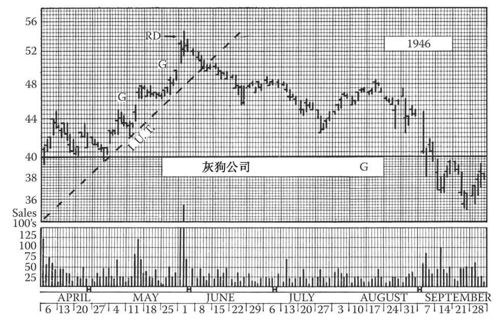

第10章 其他反转现象
到现在为止，我们已经学习了8类图表形态，它们出现在股价趋势反转时，效力或强或弱，它们是：
（1）头肩形；
（2）复合或复杂头肩形；
（3）圆形反转；
（4）对称三角形；
（5）直角三角形；
（6）箱体；
（7）双顶、三顶、双底、三底；
（8）单日反转。
在它们当中，形态（1）、（2）、（3）、（7）最常出现在长线趋势逆转的时候，而形态（4）、（5）、（6）则更常见于中线逆转。形态（1）、（2）、（3）、（5）在走完之前就会暗示未来的股价趋势。形态（4）、（6）则不会给出此类暗示，而且往往是整固和持续形态，非反转形态。但是，这些形态都既可能出现在长线顶部，也可能出现在长线底部。编者按：形态（8）常常出现在股价异动时。
我们还将讲到其他几种技术形态。它们或重要性不高，或不常见，或对长线投资者来说效力有限，所以放在最后讨论（见图10-1～图10-28）。
10.1 扩散形态
在结束第8章三角形态的学习时，我们提到有些形态有时候被称为“倒转三角”，因为它们一开始时出现窄幅震荡，然后振幅不断扩大，形成两条发散的界线。我们将这种形态归类为扩散形态，因为它们虽然形似三角形，但实质和指向上都与三角形态非常不一样。
如果对称三角形被称为“存疑”图形，箱体被称为“冲突”图形，那么扩散形态则表示市场缺少主力参与，且不受控制。这种情况下，散户一般会亢奋地参与，股价被各种小道消息左右。请注意这仅仅是可能的情况。有些时候，正是这些条件推动了扩散形态的形成，而有些时候，其形成的原因并不明朗。不论如何，这类形态确实仅出现在长期牛市的最后阶段，这也是我们分析它们的原因。
图10-1 对称扩散形态最常出现在长线牛市最后的“亢奋”阶段，克瑞公司的走势完美地诠释了这个形态。请注意这里的扩散形态开始于1945年12月股价出现一次10%的回调之后。如果这种形态出现在一段涨幅的顶部，就应该怀疑这可能是一个扩散顶。总之，该形态预示着熊市的到来。克瑞公司于1946年6月见顶于49½美元
在对扩散形态出现后的股价走势追踪研究了20多年后，我们认为，扩散形态无疑是熊市信号，当然也不完全排除后续股价进一步上涨的可能，但这种上涨只是最后的疯狂。如果你看到这个形态，不但不应该追高，而且应迅速卖出或换股。
扩散形态可能会演变成倒转的对称三角形、上升三角形或下降三角形。比如倒转的对称三角形由数波跨越水平线的价格波动构成，每一波短线高点高于前一个短线高点，同时每一个短线低点低于前一个低点。因此，这种形态会大致由两条发散的线条界定，上界线向上倾斜（从左至右），下界线向下倾斜。但这些扩散形态往往松散且不规律，而对称三角形一般规律且紧凑。对称三角形的界线可以清楚定义，且形态内的顶部和底部会在界线内慢慢收拢。相比之下，在扩散形态中，上涨和下跌一般不形成明显的界线。
10.2 扩散形态的成交量
三角形态和扩散形态的另一个区别在于成交量的变化。在真正的三角形态中，成交量不断缩小，通常第一次短线反转都伴随着高成交量，之后随着股价向三角形的顶点运动，成交量逐渐萎缩。股价突破三角形后，成交量开始扩大。如果是向上突破，成交量则会立刻明显放大。而在扩散形态中，成交量往往全程维持在高位，且其变化无规律可循。如果扩散形态出现在涨势后（大多数情况），那么不仅第1次短线反转的成交量很高，第2次反弹、第3次反弹，甚至在多个短线底部的成交量都会很高。所以，股价和成交量的走势都呈现出无序的剧烈波动。
显然在这种情况下，真正的突破很难在当时被立即辨识。成交量的变化无法为我们提供任何线索，同时，松散不明朗的走势也意味着我们无法绘制出界线（此处只讨论对称扩散形态）。当股价渐渐远离形态后，不论是向上走还是向下走，我们都可以确定突破已经发生，但此时再下注显然为时过晚。那么，面对扩散形态，我们应该怎么做呢？其实前文提到过，该形态在90%的情况下都预示着熊市的到来，往往出现于趋势见顶时。因此，我们可以推断，股价突破扩散形态后会下跌，即使股价突破后短暂走高，也会很快见顶下跌。基于这个推断，我们就知道在扩散形态出现时该怎么做了。
此外，股价在扩散形态内的变化往往预示着突破方向。如果股价将要向下突破，那么形态内的最后一波反弹可能低于前一个高点，打破高点渐高的规律；反之，如果股价将要向上突破，那么形态内的最后一波回调可能高于前一个低点。这种未能超越前一个高点/低点的情况会出现在大部分扩散形态中。但是，在股价未超越前一个高点/低点3%之前，我们都无法确定有效突破。
10.3 典型示例
前文描述的听上去非常复杂，让我们来看一个例子。当然如果读者自己画出走势图，就更直观。例如，一只名为XYZ的股票先上涨了30美元，成交量不断扩大，随后在62美元遭遇大量卖盘，股价回落至58美元。但买盘依然存在，因此股价回升，且创63美元新高。买卖双方在63美元拉锯一两天后，股价再次回落至56½美元，之后买盘涌现，造成股价的第3次反弹。股价被推升至62美元后再次下跌至59美元，但随后再次回升，并突破此前高位，到达65美元。（此时，已经出现了明显的扩散形态。）在65美元时，交投火热，随后股价再次回调至60美元。支撑位出现，股价在60～62美元的区间内震荡三四天后，再次回落至56美元，在整个震荡过程中，成交量一直维持在高位。之后，第4次反弹开始，但在上次股价跌至60美元时买入的投资者此时正在寻找回本的机会，所以股价反弹无力。此时，股价未能突破之前的65美元，扩散形态无以为继。之后，股价开始下滑，很快跌至55美元，低于前一个低点。而股价跌破56美元则可以视为突破信号。
如果仔细观察这个例子，你应该已经发现，扩散形态内会出现多次短线波动，而这种波动并不会影响最后的走势。在上述例子中，股价自56½美元反弹至65美元的过程由三段行情组成，即先从56½美元上涨至62美元，随后自62美元回落至59美元，再从59美元上涨至65美元。只要第2波的股价回落高于56½美元，且后续涨势能够越过之前的高点，即63美元，那么扩散形态仍然延续。
在此例中，股价在最后一次反弹时未能超过前一个高点，最后向下突破扩散形态。但有时，股价也可能朝着相反的方向突破。例如，如果在最后一次回调时，股价未跌至60美元就强势回升，并突破65美元的高位（而不是如前文所述，在60～62美元的区间内震荡几天），那么就会向上突破（很有可能是最后的疯狂）。
10.4 标准扩散顶
上文讨论了扩散形态的一般特点，接下来我们要看一种特殊扩散形态。这一形态多见于1929年许多热门股票见顶时，但较少出现在1929年以后的历次牛市中，基本不会出现在类似1933年和1934年中线跌势前的放量顶部。技术分析师将其称为扩散顶。虽然扩散顶符合我们对所有对称扩散形态的一般描述，但技术分析中对扩散顶有精确的单独定义。
标准扩散顶有3个连续升高的高点，在它们之间有两个低点，第2个低点比第1个低。一旦股价从第3个高点回调至第2个低点以下，该形态就宣告完成，预示着股价走势反转。
1929年的走势图能帮助我们了解这一形态。图10-2显示了空气精炼公司1929年7月1日至12月31日的每日股价及成交量。该股在走出一个扩散顶形态后，于当年10月结束了这轮牛市，图上用数字1～5标出了该扩散顶的重要转折点。只有在股价从第2个短线低点（点4）开始上行后，扩散形态才能被识别；此时，点3高于点1，点4低于点2。股价在到达点5（a和b）后，调头下行并在B点有效突破（比点4低近6%），扩散顶宣告完成，预示着长线趋势反转。在这个案例中，扩散顶对反转的预示效力极强，因为如我们的图表所示，短短4周内（10月18日至11月14日），空气精炼公司股价从220多美元跌破了80美元，后来直到1932年才见底。
上面这个经典案例中，有一些细节需要注意。首先，第3个高点形成于5a，随后的回调止步于195美元（明显高于点4），接着股价重拾升势。但是，这个案例提醒我们对扩散顶要谨慎；只有当股价明显超过前一个高点后，才能信任扩散顶。图中空气精炼公司股价在5b短暂触及了223美元，比5a高了2美元但不到3%，且当天收盘价在5a以下。10月24日股价突破到达B，比点4低了3%以上。此时出现了典型的扩散顶形态：股价反弹至B [1] ，收复最近一个高点（5b）和首次突破后的低点（B）之间失地的一半左右。根据我们的经验，扩散顶中出现这样一次反弹的概率至少为80%，反弹幅度一般为先前跌幅的一半，但也可能高达2/3。
图10-2 虽然这幅长线反转图是1929年的走势，但它完美展现了标准扩散顶的形态特点，因此可作为扩散顶的基本模式来学习。此外请注意，图上7～8月还出现了对称三角形整固形态，RG、BG、EG分别表示逃逸缺口、突破缺口、衰竭缺口（第12章将详细介绍）
我们说过这是一个经典案例。当时与此类似的股价走势俯拾皆是。1929年股市见顶时，许多个股出现了扩散顶走势，之后发生了历史上最惨烈的股灾，也许正因如此，扩散顶形态在技术派眼里具有极强的熊市预测效力。不过现在，我们认为扩散顶的预测效力比不上放量大头肩顶，但它仍代表着长线升势的最后阶段。
图10-3 美国轧机公司股票1946年8月走出了一个小而完美的扩散顶形态，而6～8月的走势是一个大的扩散形态。图上标出了5个关键的反转点。股价于8月27日向下突破，随后立即强劲反弹，但仍处于正常界线内。图33-7展示了另一只股票1946年的扩散顶
根据经验，要求股价在达到第3个高点（即我们案例中的点5）后的回调中跌破第2个低点（即我们案例中的点4）才确认反转形态完成，这条规则也许过于严格，因为扩散形态有时的确会继续发展，形成第4个高点。但是，这条规则有其存在的理由：当总体形势毋庸置疑地转熊时，不应等待过久以至于错过离场时机。另一方面，对于存在第3个高点的要求确实很合理，因为在趋势发生长线反转前，股价往往要沿着原先的前进方向冲击至少3次。正因如此，许多初学技术分析的人将大量形态归入“五点反转”一类。扩散顶是一种五点反转形态（见我们案例中的点1～5），也可以看作头肩顶。事实上，扩散顶可被看作右肩较高、颈线下倾的头肩顶。
10.5 为什么没有扩散底
本书前文研究的反转形态既可出现在顶部，也可出现在底部。但扩散形态有所不同。以前有人认为扩散底必定存在，但笔者在多年的图表研究中都不曾找到很好的实例，仅在平均指数的图表中找到过一两个较接近的形态。很明显，形成扩散形态的市场环境在股价长期下跌之后已不复存在。前文对此类形态的特征描述中提到有很多散户亢奋、积极地参与，从而造成无序状态。此类情形一般仅出现在牛市末期，而非熊市末期。
图10-4 此周线图上的扩散顶清晰而紧凑，具有很强的反转效力。此形态中第5次反转的高点（点5）其实是一个头肩顶，从日线图可以看出（参见图6-8）。此图中的虚线是趋势线，将在第14章中讨论
10.6 直角扩散形态
有水平上界线或水平下界线的“倒转三角形”出现的概率与对称扩散形态相近，换句话说，不如三角形、箱体等形态那么常见。在20世纪中期，这种形态很罕见（第9版编者按：在21世纪也仍然少见）。尽管真正的直角三角形有上升三角形和下降三角形之分，但直角扩散形态却不能套用这些名称。因为不管哪条界线是水平线，直角扩散形态都带有熊市信号，跟对称扩散形态意义相似。
但是，直角扩散形态在一个方面明显不同于对称扩散形态：水平线表示以某一固定价格建仓或出货，具体取决于哪一条线是水平的。从逻辑上说，一旦水平线被突破，就会立即产生巨大的效力。因此，如果股价在较大上涨之后形成了一个有平顶（即水平上界线）的扩散形态，且最后放量冲破该上界线约3%，则可以断定前期的涨势将持续。尽管罕见，但这种情况确实存在。而更多时候，形成平顶的空方力量最终会胜出，并使得股价大幅下挫。
此外，如果平顶扩散形态之后会有一波上涨，那么形态中第3次回调时交易量一般会明显降低，而不是像发出熊市信号的扩散形态那样伴随着持续高且无序的成交量，而且第3次或第4次回调都会高于前一次回调的低点。这种情况会演变成整固头肩形态，属于一种趋势持续形态，我们将在第11章做具体讨论。如果你持有的股票开始走出这种类型的扩散形态，那么就需要盯紧第3次回调。如果第3次回调跌破第2个低点，而成交量没有明显萎缩，那么就应该在下一次反弹时卖掉。（如果股价最后意外反弹且直冲顶部，你还是可以再买回这只股票，并不会损失多少仓位。）

图10-5 此月线图上过于分散（高点相差5、6个月）的扩散趋势不应被赋予重大的技术意义。真正的扩散顶的高点间隔不应超过两个月（见图10-4）
有平底的直角扩散形态基本都会被向下突破，一旦股价跌破下界线，常常会有一次反弹，回到该界线。反弹可能维持几天或两三周。这种情形很像头肩顶被向下突破之后的反弹。
（请注意平底扩散形态中第3或第4次反弹的高度可能会低于前一次，这种情况可以参考头肩形态。也就是说，每一个头肩形态都始于扩散形态。这种关系自然引出我们将要讨论的下一类反转形态。）
10.7 钻石形态（又称菱形）
钻石反转形态可以被视为带有V形颈线的复杂头肩形，或是经过两三波股价“震荡”后突然转变为对称三角形的扩散形态。考虑到成交量变化，钻石形态更类似于扩散形态。由于该形态酷似一颗钻石的形状，从而得名。
图10-6 联合布业公司1945年2～3月经历了连续3次回调，每次回调低点都下移，但中间的反弹则都止步于21¼美元附近，因此形成了一个有水平上界线（阻力线）的直角扩散形态。4月16日，这条具有重要技术意义的上界线被穿透，发出上涨信号。这种平顶扩散形态并不一定是熊市信号
虽然钻石形态在图表上易于辨识，但并不常见。因为钻石形态出现于交投活跃的市场，所以基本不会出现在底部反转时。钻石形态常见于长线顶部和为期较长的中线调整前的放量顶部。很多复杂头肩形也可勉强看作钻石形态，因为这些形态带有一条弯曲的颈线。但是，在把头肩形归为钻石形态时，读者要谨慎。人们常常急于锁定钻石形态，因为V形颈线能比头肩形的水平颈线更早地给出突破信号。但除非头肩形的后半部分出现了一系列振幅越来越小的短线波动，且在这个过程中成交量像三角形态一样不断萎缩，否则我们最好仍把这些形态归类为复杂头肩形。
本章的图表足以让读者清楚认识钻石形态的特点，我们在此不必赘言。钻石形态也有一个最小上涨/下跌目标，在学习了头肩形和三角形的公式后，你也许可以自行推测出来。股价突破形态后的最小上涨/下跌目标等于该形态的顶部（高点）至底部（V形颈线）的距离。需要注意的是，这个最小上涨/下跌目标仅在有足够的空间反转时才适用。通常，新趋势开始后，股价的变化将远超过最小上涨/下跌目标。

图10-7 派拉蒙影业公司1946年的顶部是一个直角扩散形态，6月第1周股价曾跌破该形态的水平下界线，但直至6月20日该形态才被有效突破（该股票之后进行了2∶1的拆股）。一年后，股价自顶部跌至46美元
10.8 楔形
我们前面学习过的所有形态都可能出现于长线趋势反转时，其中少数形态基本上只出现于长线趋势反转时。现在，我们要讨论3种只对短线或中线趋势有意义的形态，这些形态对操盘也有实用价值。楔形就是其中一种，我们在第8章曾经提到过这个形态，它与三角形态有相似之处。
楔形的图形特征是：股价波动由两条收拢的直线（或近似于直线的曲线）界定。但与三角形态不同的是，这两条直线同时向上或向下倾斜。在对称三角形中，上界线向下倾斜，下界线向上倾斜；在直角三角形中，一条界线向上或向下倾斜，另一条保持水平。而在上升楔形中，两条界线都向上倾斜，但因为这两条线最终会相交，所以下界线倾斜的角度大于上界线；在下降楔形中则相反。
你或许会认为，既然上升三角形（即一条界线水平一条界线向上倾斜的形态）预示着牛市，那么上升楔形（即两条界线同时向上倾斜）更应该预示着大牛市的到来。然而事实并非如此。前文曾经提到过，上升三角形的平顶代表股票正在以特定价位出手，当这些卖盘被全部吸收后（上倾的下界线代表卖盘迟早会被吸收），股价就会上涨。而在上升楔形中，没有明显的出货价位，但买盘会逐渐耗尽，每一波涨势都比上一波更无力，最终趋势反转。所以，上升楔形预示着一个越走越弱的趋势。

图10-8 联合百货公司的股价在1945年年末走出了一个平顶扩散形态。该公司股价在1946年达到了63美元。股价突破该形态后，出现了一个突破缺口（G），另一个突破缺口（G）出现于12月3日。图中G-G代表岛形，详见第12章缺口部分内容

图10-9 美国钢铁公司1946年的牛市顶部是一个为期3个月的钻石形态，也可以解读为一个头肩形

图10-10 美国博世公司股价在11月构筑了一个钻石形态，然后向上突破，因此该钻石形态是整固而非反转
图10-11 与日线图相比，在周线图上更易发现钻石反转形态。这张图上，壳牌石油公司在1946年5～6月构筑了一个钻石形态，请观察这段时间的价格走势与成交量变化。此外，请注意1946年9月至1947年2月的下降三角形，股价于1947年3月反弹至三角形顶点，此时是卖空良机
可以说，不管在怎样的形态中，股价的任何一次上攻都会削弱市场的技术动能。价位越高，潜在买家的买入意愿就越弱，而持有者的抛售意愿就越强；换句话说，每一次上攻都会导致卖盘增加、买盘减少。（虽然理论上是这样，但实际上股价的飙升往往吸引更多人跟风买入。）上升楔形与正常上升通道（后文详述）的区别在于，楔形对上攻构成了某种限制。楔形的两条界线收拢于一点，股价将止步于该点附近，然后回调。
我们可以用几句话概括上升楔形的基本特征。这种形态既可能出现在上升趋势见顶时，也可能出现在下降趋势见底时。楔形一般需要3周以上时间来完成；若短于3周，则最好归类为“三角旗形”（下一章详述）。从楔形的起点线（两条界线开始收拢时）到楔形的顶点（两条界线的相交点），股价在界线内波动往往会达到至少2/3的长度；许多时候，股价上升到楔形顶点的水平，甚至在该水平之上最后反弹一波后才开始暴跌。而股价一旦跌破楔形的下界线，通常就会义无反顾地急跌，回吐先前楔形的全部涨幅，有时甚至跌去更多。楔形的成交量变化常与三角形一样，随着股价向楔形的顶点攀升，成交量逐渐缩小。
图10-12 未来的技术派在回顾这段时间时会对这个顶部津津乐道，因为20世纪90年代的大牛市在此戛然而止。最有意思的是，道琼斯工业平均指数当时的技术形态很容易识别，用一把尺子就能分析出来（见本书附录B“资源”）。只要认真看一下，就能发现牛市已经结束，或至少正在筑顶。本书作者之一爱德华兹当时指出，道琼斯工业平均指数的扩散顶演变成了钻石形态，发出一个向上突破的假信号，接着走出一个松散的上升三角形，此后向下突破并构筑了一个V形底部，然后回升至高位，总体形态呈“魔鬼箱体”。2001年的反弹止步于2000年8月画的阻力位，股指随后一路下滑并迎来了“9·11”事件。显然，投资者在此期间无法做多。对于市场的持续横盘趋势，我们是否有办法预测？没有。这一切都是“事后诸葛亮”吗？读者可在附录B“资源”中查阅《约翰·迈吉投资通讯》对当时市场的分析
10.9 下降楔形
上升楔形倒转过来，就成了下降楔形。但是，下降楔形完成后的股价走势有自己的特点。股价突破上升楔形后，往往迅速下跌；而股价突破下降楔形后，更倾向于先呈现一段横盘走势或交投清淡的碟形走势，之后再上涨。因此，面对上升楔形，投资者应果断抛售，落袋为安；而面对下降楔形，投资者不妨静观其变，持股待涨。
图10-13 哈德森汽车公司股票在1946年以一个钻石顶终结了长线牛市，该钻石顶也可被视为复合头肩顶。这一形态在周线图上很明显，但在日线图上不易辨认。请注意该钻石顶发出抛售信号的价位比头肩顶高约2美元。14½至17½美元的区域可以勉强看作一个箱体，1947年2月基本完成
上升楔形和下降楔形都的清晰应该可辨。楔形的股价应该走势紧凑，波动频繁，上下界线容易画出、有一定斜度且明显收拢于一点，否则就应对楔形的效力持怀疑态度。有时一条界线接近于水平，令楔形类似于直角三角形，其效力就很可疑，因为直角三角形的预测结果完全不同于楔形。对于这两种形态，很难给出严格的判别规则。如果一条界线接近于水平，或者每日收盘价基本处于同一水平线上，那么不妨将形态视为三角形。其实读者不必过于担心这个问题，只要对图形稍有经验，就能分辨此二者。你很快就能识别不同形态的特征，并凭直觉就能做出正确判断。
10.10 周线图和月线图上的楔形
大多数真正的楔形存续时间都很短暂（一般不超过3个月），因此在月线图上不容易识别，但有时候可以从周线图上看出来。有时候等差坐标图上可以看出长期逐步
图10-14 美国钢铁公司在1937年8月第二次反弹中再次冲顶，但价格波幅收窄，成交量下降，形成两条上倾且收拢的界线。这种形态即楔形，发出熊市信号。从7月至8月底的这一波上涨最后形成了一个圆顶。图中3处G代表突破缺口（见第12章），最后一个突破缺口形成于9月7日股价向下突破支撑位（见第13章）时
下降的楔形。因此，从等差月线图上看，一次完整的长线熊市看起来可能像一个巨大的下降楔形。这是因为一波长线跌势中，随着指数点位和个股股价逐步下移，市场涨跌的百分比虽然保持不变，但涨跌的绝对点数和金额在逐步变小。这样的长线图表形态并非我们前文讨论的楔形。在半对数坐标图中，这些市场波动看起来会像平行或扩散通道，而不是收拢通道。
10.11 常见于熊市反弹的上升楔形
最后，我们补充一点：上升楔形是熊市反弹中的常见形态。市场在经历了长期下跌后常会出现楔形，以至于大家会问牛市是否已经到来。在长线熊市以头肩底结束时，其左肩至颈线的这波涨势常常会以上升楔形呈现。等差周线图中的上升楔形几乎总出现于熊市，反映上涨动能在减弱，这也是熊市反弹的基本特征。
图10-15 洛氏公司1936年走出了一个“理想的”下降楔形。请注意这里的成交量，虽然不规则，但整体在不断萎缩。该股7月走出了一个小旗形（见第11章），年底时走出了一个箱体，此后股价飞涨至75美元
10.12 单日反转
我们在第6章中提到过有一种价格形态叫单日反转。单独来看，这种特定的技术反转只具有短线趋势意义。的确，单日反转可能正好出现在长期涨势的最高峰，甚至刚好是头肩形态触顶那一天，但也不能因此认为它预示了整个熊市的到来；单日反转仅表示头部的反转。单日反转也可能出现在整固对称三角形初期（第1个高点），并非表示趋势将逆转。即便如此，单日反转至少意味着短期上涨动能的枯竭。
单日反转常见于恐慌性抛盘的末期，被称为抛售高峰日。这种形式常常具有特殊意义，我们将在稍后具体探讨。但是，首先，什么是单日反转呢？
首先，这一天的成交量极高，远超过去几个月内任何一天的成交量。在此之前，股价已经经历了长时间的稳步上涨（或持续下跌），成交量也不断放大。当天开盘后，股价立即飙升或急跌，势不可挡。而且，这一天的开盘价常常会远高于（或低于）前一天的收盘价，在图表上留下一个明显的缺口（后续章节会详细讨论）。在涨势（或跌势）停止之前，股价已经在一两个小时内完成了一般需要三四天才能达到的涨/跌幅。但这波涨势（或跌势）迟早会止步，可能是开盘1小时后，也可能是快收盘时。之后，股价小幅波动，交投持续活跃。然后，趋势突然反转，股价迅速朝反方向运动。尾盘时，交投大增，将股价压低（或拉升）至当日的开盘价附近。总体看来，这一天成交量骤增，股价盘中波动达2%～3%，但收盘价与前一个交易日相差不大。
顶部单日反转常见于流通盘较小的股票。这些股票经过一段时间的稳定上涨，吸引了大量投资者。但这种反转形态基本不会在平均指数的图表上出现。抛售高峰日（底部单日反转）明显可见于平均指数出现恐慌性或异常下跌时。
前文已经提到过，单日反转不会影响长线趋势。短线客可以通过单日反转获利，如果时机把握得好，手头资金又充足的话，他们可以赚得好几个点的利润。但一般来说，新趋势（即收盘时的趋势）的效力并不强，股价通常会在收盘价附近徘徊一段时间，呈现出某种形态，之后再走出一段中线趋势。单日反转常常是意义更大的技术形态中的一部分，是我们预测趋势发展的重要线索。无论如何，一旦单日反转出现，我们就要更加小心，密切注意后续走势，准备迎接意义更重大的趋势。
图10-16 楔形很少出现在长线趋势反转时，但申利蒸馏酒公司1946年的牛市高点却形成于一个为期8个月的上升楔形的末端，周线图上可以看得很明显。60美元的虚线表示支撑位（见第13章），股价在此附近停留了约9周
图10-17 跨大陆及西部航空公司的这张日线图跨越12个月，包含很多有趣且重要的技术形态。请注意12月3日走出的标志着其长线顶部的单日反转形态。尽管此后4周的走势勉强可称为下降三角形，但这个单日反转才是明确无误的卖出信号。在学习三角旗形时，请重温此图，观察11月的形态。该股中线跌势于1946年8月暂告一段落，但没有得到成交量（见第14章）的印证。请注意在此跌势中，没有出现任何买入形态

图10-18 灰狗公司在1946年的牛市顶部走出了一个明显的单日反转形态。请注意这一天的天量。另一个反转日在8月26日出现。同时，图上的缺口（G）是测量缺口（见第12章）。如果读者回顾前面几章的话，就能发现前几章的图表中也出现过效力或大或小的反转日
第8章曾经讨论过对称三角形顶点附近会出现假突破或震仓现象，这些现象也常常以单日反转的形式出现。
10.13 抛售高峰日
过去监管还不那么严格的时候，买股票只需要10%的保证金，卖空不受限制，市场主力常常进行空头打压，对融资盘进行震仓。他们在投资者手头资金紧张时大量卖空，压低股价。券商就会通知投资者追加保证金，而许多人拿不出或不愿拿出这笔钱，于是被强制平仓，而这又进一步加剧了股价的下跌。这时，主力会开始补仓，赚上一笔，同时吸纳了足够的筹码，为下次的牛市做好准备。后来，美国证监会（SEC）出台了法规，有效地抑制了空头打压的行为。但只要允许保证金交易，追加保证金和强制平仓的现象就会一直存在，且进一步影响股价的涨跌。
大多数真正的抛售高峰日都是由上一段所讲的强制平仓引发的，往往出现在快速普跌之后。这一过程是逐波展开的，一波强制平仓引发一批保证金账户爆仓，进而引发又一波强制平仓，最终导致巨量抛盘涌入市场，形成抛售高峰，此时的单日成交量可能已创下新高。对于已在高位离场、手握现金的投资者来说，此时正是进场扫货的好时机。
图10-19 苹果公司在1987年里根执政时期的暴跌。此次暴跌难道是毫无预兆的吗？其实在暴跌发生之前，股价走势已经发出了大量信号：长线趋势线被突破；暴跌前，虽然市场仍处于疯狂的牛市，但该股短期上涨势头已经减弱；在暴跌期间，恐慌抛售出现了典型的空头回补现象；最后，跌势持续
显然，抛售高峰会迅速扭转市场的技术面貌，因为在此过程中，股票以极低的价格从实力较弱的一方转移到了实力较强的一方，之前威胁股票上涨的潜在抛盘得到消化。此外，股票估值往往比保守的估值水平还要低得多（当然只是暂时性地）。
抛售高峰和趋势反转并不一定要在一天内完成。我们将其归类为“单日反转”形态，但该形态有时需要两天，因为第一天下跌时间过久以至于来不及反弹，第二天开盘即强劲上攻，市场上显然已不再有强制平仓盘。
道琼斯指数有史以来最大的单日跌幅出现在1929年10月29日。那天道琼斯工业平均指数的开盘点位252.38即为全日最高点，比前一日收盘点位低8点以上。市场开盘后立即迎来了大量恐慌抛盘；离收盘还有2小时时，工业指数已跌去40.05点，此时该指数从212.33点开始反弹，上涨近18点到230.07点。第2天该指数接着涨了28点。1929年的这个抛售高峰还创下了日成交量的最高纪录：5小时内成交了16410000股，两倍于之前整轮牛市中任何一天的成交量。但是10月29日的低点一周后即被跌破，指数直到11月13日才到达1929～1932年这轮熊市初期的底部。（编者按：请见下文关于1987年里根当政期间股市暴跌的评论。）
图10-20 1937年10月19日股市发生了“大恐慌”，几乎所有大盘股都放量暴跌。这张图上，纽约中央铁路公司股价7～8月构筑了头肩顶后向下突破，然后构筑了一个整固箱体，该箱体演变成了三角形，股价于10月初突破三角形下行，该股票在次年3月最终见底于10½美元。在对数坐标图上，该股自1937年8月开始的下跌趋势线直到1938年6月才被突破
1937年的市场恐慌行为以10月19日的抛售高峰告终，那是又一个载入史册的“黑色星期二”。道琼斯工业平均指数前一天收于125.73点。股价此前从8月中旬的190点高位一路下跌，几乎所有的保证金账户都岌岌可危。10月18日几乎所有券商都紧急通知客户追加保证金，但大多数客户未能及时缴交。10月19日开盘后，巨量抛盘涌出，股指一泻千里。上午11：30，道琼斯工业平均指数已经跌到115点，此时抛盘枯竭。1小时后，股指迅速回升。当天股指收于126.85点，收复全部失地；当天成交量高达7290000股，两倍于前一波牛市顶部任何一天的成交量。道琼斯工业平均指数10天后盘中一度攀至141.22高点，但在1937年11月20日跌破了10月19日的恐慌底；这一波熊市终结于1938年3月31日的98.95点。
编者按：在1987年的同一天，市场又陷入像1937年10月19日那样的大恐慌，这也难怪。自8月25日至10月20日，道指从2746.65点暴跌到了1616.21点，总共跌去了1130点，跌幅高达41%。期间的大恐慌自10月14日（2485.15点）延续至10月20日（1616.21点），仅10月19、20日两天道指就跌去了547.95点，跌幅高达25%。正如安德烈·马尔罗（AndréMalraux）所言，一个事物越是不断变化，就越是保持不变。类似的暴跌未来还会重现。

图10-21 1987年里根当政期间，道琼斯工业平均指数发生暴跌。当时有传言称里根患上了老年痴呆症。而引发股市暴跌的直接原因是学者们推动了一项思虑不周的资产组合保险计划，从而加重了专业投资者的恐慌。请注意，当关键的（较低那条）趋势线（75天）在9月初被突破超过2%时，迈吉建议离场。而更敏锐的交易者应该早在较高那条趋势线（25天）被突破时就已离场。整个9月，聪明的投资者不断对冲、变现；10月，基金经理陷入恐慌。根据《布雷迪报告》（Brady Report），赫尔交易公司（Hull Trading Co.）10月20日进场抄底，从而拯救了美国的资本市场
前文描述的是整体市场 天量抛售的情形，许多活跃个股几乎同时出现抛盘。尽管在少数情况下，某个公司的股价会受到特定完全意外的负面消息影响，并遭遇恐慌性抛盘，形成单日反转。但是，出现在个股图表上的顶部 天量单日反转，大都是在配合大盘的抛售高峰。相反，底部的天量单日反转一般多见于个股，而非大盘。
上文所列的抛售高峰的两个例子以及其他无数恐慌性抛盘的例子无疑给了聪明或幸运的投资者极佳的抄底机会。如果此时入场并在数天后出手，一定能获取可观收益。专业的操盘手往往会抓住这样的机会。关键在于如何及时识别这种抛盘的特征并抓住机会。当然，实际操作并没有我们说的这么简单。在1929年10月24日的这次抛售高峰，道琼斯平均指数下跌了30点，然后又反弹了30点，成交量几乎达到1300万股，但如果投资者未能在48小时内低买高卖，那么他几乎没有机会再回本。
但是，识别抛售高峰并不是不可能，如果你有金融圈的朋友，就可以知道保证金账户的情况，从而推测出会强制平仓的金额。编者按：现在这些信息不再难以获得，一般的财经媒体都会报道。抛售高峰日发生在一段跌势进入恐慌阶段之后。这一天往往跳空低开（开盘价显著低于前一个交易日的收盘价），抛盘多到好像难以吸收，股价跳水，成交达到天量，市场振幅异常巨大，几乎每只股票都如此。然后，在上午11点左右，卖盘差不多枯竭，有些股票继续下跌，但很多已经开始触底回升。突然之间，股价跳涨，此时应该买入超跌的优质股（如美国钢铁公司），但不能持有太久，一旦反弹出现任何放缓迹象，则应迅速出手，落袋为安。
请记住，单日反转并不是可靠的长线趋势反转信号。抛售高峰日一般不出现在熊市的最后阶段，因为此时不坚定的筹码早已被震仓出局。历史上仅有1938～1939年这轮为时5个月的熊市是以恐慌阶段收尾，且随后的牛市也同样短暂。
还有一种反转形态被称为岛形，与我们尚未讨论的“缺口”密切相关。缺口将在第12章中做详细分析，届时我们再对岛形进行讨论。
10.14 潜在重要的短线现象
持续仅一天或几天的短线现象有时可能不但具有短线意义，还对长线趋势有暗示作用。缺口（见第12章）和单日反转（第10章）就属于这一类短线现象。其他有趣的同类还包括长钉形、关键反转日（有时仅被称为“反转日”）、逃逸日（有时被称为“宽幅振荡日”）。
图10-22 前文所述的抛售高峰日是典型的单日反转现象，1939年4月整体市场的单日反转是历史上唯一一次标志着长线熊市底的单日反转（尽管很多个股于1938年3月就出现了抛售高峰日）有时候，周线图会出现可被称作“一周反转”的形态，这可以从上图全美现金出纳机公司的走势中明显看出。在这个例子中，后续的上涨证明该股的技术平衡点发生在1941年12月。有趣的是，该公司的长线走势周线图中并没有出现其他明显的反转形态。（日线图显示为一个上升三角形。）但此例并非为了证明此图带有重要的技术意义。相反，大多数“反转周”后续的走势令人失望
10.15 长钉形态
长钉形态很难立刻被辨识出来，因为如果它在头肩顶附近出现，会远高于前后几天的股价，而如果在头肩底附近出现，则会远低于前后几天的股价。因此，当股价经历巨幅波动后，我们必须紧盯后续几天的股价表现，从而区分出长钉形态和逃逸日。长钉形态和逃逸日都是多空双方较量的结果，但当天的收盘价会告诉我们哪方获胜。长钉形态的重要性取决于以下几点：
（1）长钉形态出现之前的走势强弱及持续时间；
（2）当天的收盘价是否高于底部或低于顶部；
（3）长钉形态相较于前后几天走势的显著性。
长钉形态出现在长线牛市末期，当日股价巨幅波动，开盘后飙升，收盘时回落，甚至可以被视作一个单日信号。至于是否要根据这个信号进行交易，则取决于投资者的投资风格偏重于长线还是短线。其实，长钉形态也是一种特定的单日反转形态：开盘出现跳空缺口，大量买盘推高股价，随后买盘枯竭，最终股价收于开盘价下方或当日最低价。这就像战场上，乘胜追击的一方突然意识到对方是在诱敌深入，于是立刻掉头撤退。
此形态倒转过来，就是长钉底。股价在长钉反转之后，往往会有较大的涨跌幅。图10-23展示了一个长钉顶。图1-1和图7-16展示了爱德华兹和迈吉记录的一些长钉顶。
10.16 逃逸日
逃逸日在技术图上有异常大的振幅，因此格外醒目；空头逃逸日要么低开高收，要么高开低收。空头故意退却，目的是将多头引入陷阱。持仓主力或空头不能或不愿满足买方的需求，导致振幅达到平时的两三倍。虽然灵敏的投机者可以乘势做些短线交易，但是该形态的技术意义将在随后几天体现出来。若股价呈现整固态势且成交持续放量，则可确认逃逸日成立；若股价呈现圆形或震荡上行走势且成交量萎缩，则应对逃逸日的效力持怀疑态度。虽然出现逃逸日时你就可立即买入或卖出，但若股价向逃逸日的低点回归，则可能表明逃逸日是一个假信号，股价正在形成相反的走势。图7-20展示了带缺口的逃逸走势。
图10-23 高通公司的教堂尖塔形顶部。12月的缺口可能被误判为买入信号，但其实这是一个强烈的离场信号。缺口形成后，第2天出现关键反转形态，这是另一个有效的离场信号。但是，投资者怎样才能确定这是一个预警信号还是续涨信号？投资者可以通过观察前期趋势的持续时间、趋势的强弱和走势的坡度来判断。当趋势线转变为垂直状态，投资者就必须警醒并做相应操作。股价在第1个逃逸日回落，说明这是个牛市陷阱。而3月的三角形态被突破后，第2个牛市陷阱形成。此图汇集了各种具有代表性的形态，值得学习
图10-24 微软公司股价在3月出现了一个关键反转日。美国司法部对微软的垄断指控引发了逃逸缺口、衰竭缺口等一系列突破缺口。抛售高峰出现后，股价一路走低。此图形态丰富，颇具研究价值

图10-25 eBay公司股价突破趋势线，走出横盘形态，非常适合高抛低吸。请注意图中出现了多个关键反转日
图10-24显示，微软公司股价在2000年以逃逸日的形式构造一个多头陷阱后下跌，随后该股跌幅达到了50%。
10.17 关键反转日
关键反转日形态出现在股价盘中创出新高、但收于前一日收盘价以下的时候。作为短期交易信号，关键反转日有重要意义，但和其他所有技术形态一样，要求精确的判断与择时。在牛市中，会出现少量由关键反转日构成的短线高点。在长线或重要顶部的关键反转日，交易者可在收盘时卖空个股，同时按反转日的高点设置止损价。然后，他可以在股价下跌后获利了结。若他足够大胆，则可以此作为空头建仓的第一步，随着更多形态的出现和支撑位的跌破不断加大空头仓位。
图10-26 既然你不能在互联网上交付货品，那么互联网还有何用？eBay公司首席执行官梅格·惠特曼为互联网找到了真正的价值，让它成为有史以来最大且在不断成长的跳蚤市场。每个将军都明白一个道理，那就是乘胜追击！而eBay所做的就是不断乘胜追击。技术派人士能从eBay股票上学到什么吗？绝对能。虽然技术派仅凭图表就能交易，而无须知道个股名称，但是任何基本面信息或数据都不应被忽略。在此案例中，基本面信息就是eBay公司已经有了巨大的业务量，这完全契合该股的走势。凭借强劲的业务增长，eBay股价牛气冲天。精明的投资者总是紧盯着优秀的企业家，比如eBay公司的惠特曼、甲骨文公司的拉里·埃里森、英特尔公司的戈登·摩尔、微软公司的比尔·盖茨、苹果公司的史蒂夫·乔布斯等。那么在2005年，投资者应怎样操作eBay股票？你可以画一条趋势线，提高止损价位，如果趋势反转就抛出
该形态还有助于把握波段行情，比如2000年以来一些互联网公司股票的走势。通过对关键反转日的把握，交易者可在2000年年初逃过纳斯达克市场的暴跌（见图10-25 eBay的走势和图10-27朗讯的走势）。
在缺口、单日反转、关键反转日、长钉、逃逸日等所有短线形态中，一旦价格回归形态起点，则表明该形态无效，投资者应立即调转交易方向以获利。
以上显然是短线客、投机者的操作策略，但长线投资者了解一下也有好处。

图10-27 此图展示了朗讯科技公司股票在20世纪末21世纪初的剧烈震荡走势。图上既有逃逸日，又有突破缺口、反转日，可谓惊心动魄。面对这样的走势，只能快进快出，跟风炒作。理性投资者有什么理由持有这样一只个股呢

图10-28 在图10-27中我们反问道，理性投资者有什么理由持有朗讯科技公司股票？从此图上可以清楚地看出，如果投资者不设止损位，那么该股的非理性波动会给他们带来多么大的损失。投资者无法知道市场上的全部信息，但如果仔细看图，就能察觉一些蛛丝马迹。此图于本书更新至第9版时加入
[1] 从图上看应为P 点。—译者注